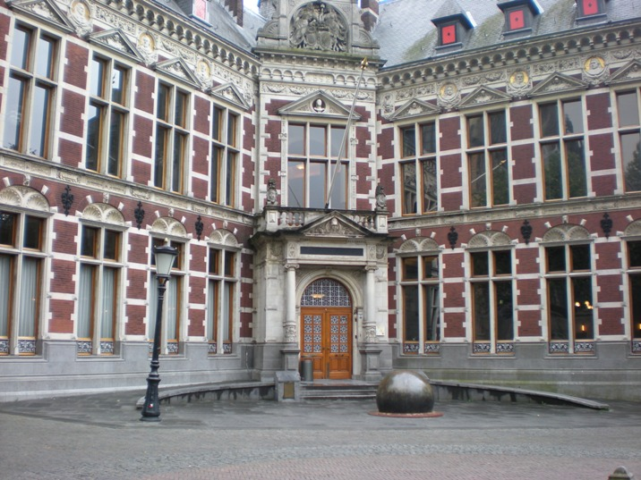
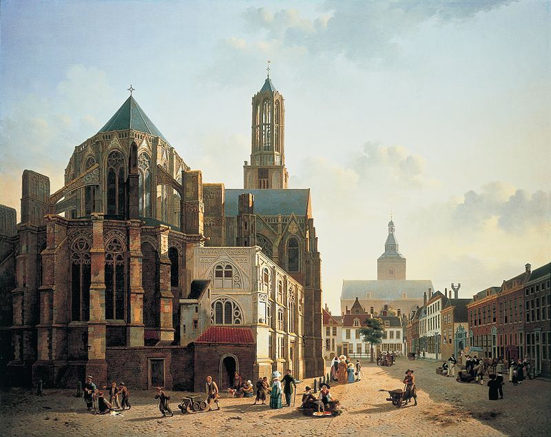

Utrecht es la capital de la provincia homónima. Se ubica en el centro de los Países Bajos, siendo la cuarta ciudad en importancia de este reino. Es uno de los ejemplos más destacados de la morfología de una urbe histórica y monumental en los Países Bajos. Asimismo, es uno de los principales centros económicos e industriales del país. Utrecht es conocida por la Torre de la Catedral de Utrecht y los canales en el centro de la ciudad. Es considerado el segundo destino turístico más demandado de los Países Bajos, después de Ámsterdam, debido fundamentalmente a la belleza y disposición de la urbe y la intensa actividad cultural y de ocio que presenta.
| Universidad de Utrecht | Centraal Museum | |
La Universidad de Utrecht es una universidad neerlandesa situada en Utrecht, en los Países Bajos. Es una de las universidades más antiguas y más grandes de los Países Bajos y una de las más prestigiosas de Europa. Según la Clasificación Académica de las mejores universidades del mundo, elaborado por la Universidad de Shanghái Jiao Tong, la Universidad de Utrecht es la número 52 del mundo y tiene el undécimo lugar en Europa. En el año 2007, la revista The Science Magazine publicó una investigación anual de las universidades donde la de Utrecht aparecía en el lugar número 9 del mundo, en el lugar número 7 de Europa y en el lugar número 1 de los Países Bajos. Fundada el 26 de marzo de 1636, la Universidad de Utrecht ahora acoge a 29.755 estudiantes y emplea a 8.614 personas, entre ellas a 570 profesores de tiempo completo. En 2004, se otorgaron 358 doctorados y se publicaron 7.010 artículos. El presupuesto en 2008 ascendió a 715 millones de euros. |
El Centraal Museum es el museo de la ciudad de Utrecht, Países Bajos, que alberga una importante colección de arte de antes de 1850, arte moderno, artes aplicadas, moda e historia de la ciudad. El museo fue fundado en 1838. Inicialmente limitaba al arte relacionado con la ciudad de Utrecht. En 1921 esa colección se fusionó con diversas colecciones privadas en un nuevo museo central ubicado en el antiguo monasterio medieval de Nicolaaskerkhof. Forma parte del propio museo la casa Rietveld Schröder, incluida por la UNESCO en la lista de Patrimonio de la Humanidad en el año 2000. Entre las obras más destacados del museo está un barco del año mil, el barco de Utrecht. Otro punto a destacar es la colección de pinturas de los caravaggianos de Utrecht, como Gerard van Honthorst y Hendrick ter Brugghen. Ambos viajaron a Roma en el siglo XVII para estudiar las obras del maestro italiano Caravaggio. Junto con los manieristas Joachim Wtewael, Abraham Bloemaert, Paulus Moreelse y el renacentista Jan van Scorel,, los caravagistas dan a la colección de Utrecht un atractivo internacional. |
|
|  |  | |